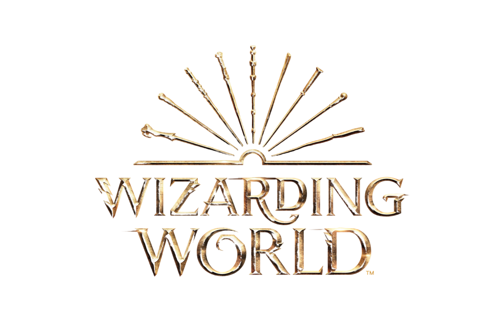

WIZARDING WORLD에서 Ollivander와 함께 나의 마법 지팡이를 찾아보세요!
First of all, would you describe yourself as...
우선, 너를 묘사한다면...
1) Average height 평균 키
2) Tall 큰 키
3) Short 작은 키
And your eyes...
그리고 네 눈은...
1) Dark brown/black 어두운 갈색/검정
2) Blue 파란색
3)Grey 회색
4) Brown 갈색
5) Hazel 헤이즐색
6) Blue/Grey 파란색/회색
7) Green 초록색
8) Other 다른 색
Was the day on which you were born...
네가 태어난 날은...
1) An even number 짝수
2) An odd number 홀수
Do you most pride yourself on your...
네가 가장 자랑스러워 하는 것은...
1) Determination 결단력
2) Imagination 상상력
3) Resilience 회복력
4) Intelligence 지능
5) Originality 개성
6) Optimism 낙천성
7) Kindness 친절함
Travelling alone down a deserted road, you reach a crossroads. Do you continue...
불모지를 혼자 떠돌다가, 갈림길에 도착했다. 너는 이제...
1) Left towards the sea 바다로 향하는 왼쪽으로 가기
2) Right towards the castle 성으로 향하는 오른쪽으로 가기
3) Ahead forwards the forest 숲을 향해 앞으로 나아가기
Do you most fear...
네가 가장 두려워하는 것은...
1) Fire 불
2) Darkness 어둠
3) Isolation 고립
4) Heights 높은 곳
5) Small spaces 좁은 공간
In a chest of magical artefacts, which would you choose...
마법 물품으로 가득 찬 궤짝에서, 한가지만 고른다면...
1) Silver dagger 은색 단검
2) Ornate mirror 화려하게 장식된 거울
3) Clittering jewel 빛나는 보석
4) Bound scroll 묶여 있는 두루마리
5) Golden key 금색 열쇠
6) Dusty bottle 먼지 쌓인 병
7) Black glove 검정 장갑